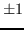

Next: Polarization/Stokes Handling (stokes and Up: Visibility Data Concepts Previous: Spectral Window Selection
Thus, for example, if the calibrator was 0823-500, and the program source was vela, one would use
select=source(0823-500)
and
select=source(vela)
to select the appropriate source.
The selection criteria most appropriate for datasets containing multiple sources, frequencies and mosaiced pointing centres are source, frequency, window, ra, dec, dra and ddec.
Other examples of using the select keyword are given below:
| SELECT | |
| select=window(2) | Select only data from the 2nd IF |
| select=freq(4.74) | Select data where the frequency of the first |
| channel is 4.74 GHz (%) | |
| select=ra(05:30,06:00) | Select visibilities with RA between 5:50 and 6:00 |
| hours. | |
| select=dra(0),ddec(0) | Select data from only the central pointing (delta |
| RA and DEC of 0) of a mosaiced observation. | |
| select=source(vela) | Take data for source vela only |
| select=window(2),freq(4.74) | Select data from the 2nd IF where its frequency |
| is 4.74 GHz. | |